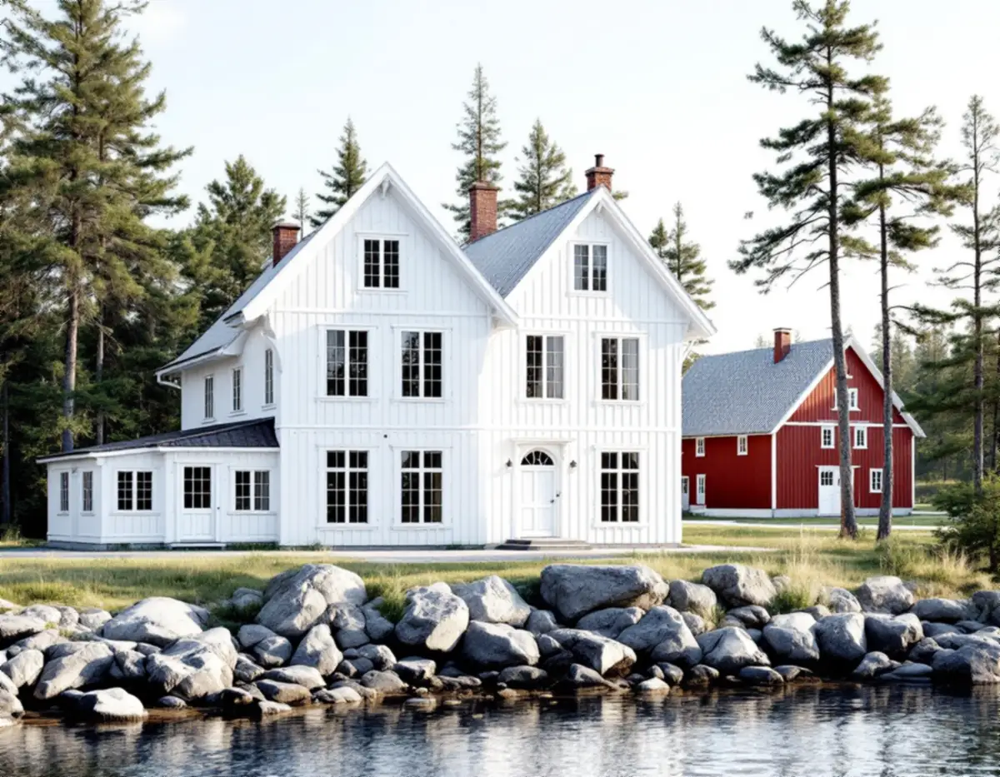
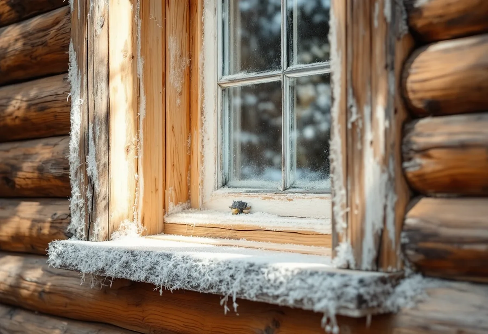

Bilder före besöket
Foton på huset och fönstren hjälper oss att planera besöket på gården.
På Björkö och Arholma i Roslagen står redargårdarna från 1800-talets mitt, och enligt Länsstyrelsen är huvuddelen av dem i dag sommarbostäder. Geal Entreprenad AB renoverar fönster i Norrtälje kommun. Vi lagar bågar, drevar om runt karmen, kittar och målar med linoljefärg och ser över innerbågarna inför vintern.

Länsstyrelsen i Stockholms län har i rapporten Redargårdarna på Björkö-Arholma beskrivit hur skeppare och redare byggde påkostade gårdar under den blomstrande sjöfartsperioden i mitten av 1800-talet. Många redarfamiljer uppförde mangårdsbyggnader i stil med fastlandets herrgårdar, och på Björkö finns sex välbevarade och påkostade redargårdar. Mangårdsbyggnaden på Blekunge gård uppfördes 1831 och fick sin höga veranda först i början av 1900-talet.
För Blekunge lyfter rapporten fram att byggnadernas exteriörer och den oexploaterade omgivningen är centrala för upplevelsen av hur gården såg ut redan på 1800-talet. Fönstren är en stor del av den exteriören. Vi menar att ett hus från 1800-talet som får nya fönster med andra proportioner ser annorlunda ut, även om allt annat är kvar. På gårdar och sommarhus runt om i kommunen tycker vi därför att det är värt att pröva en renovering av de gamla bågarna innan nya beställs.

Länsstyrelsernas informationsblad om fönster förklarar att karmen i ett timmerhus står fritt i ett större hål, för att inte hindra timret från att sjunka. Skarven mellan karm och vägg drevas, och fodret täcker skarven. Boverkets energiguide kallar tätning det enklaste sättet att förbättra ett fönster och nämner där isoleringen runt karmen och drevningen bland det man kan kontrollera och förbättra. Drar det runt ett fönster vars båge sluter tätt, är skarven därför ett av de första ställen vi tittar på.
Vi tar loss fodret försiktigt, plockar ut gammal drevning som har packats ihop och drevar om innan fodret sätts tillbaka. Är fodret skadat kan det kopieras efter det gamla. Bladet beskriver också hur fönstren har förändrats: stugorna på landsbygden fick glasade fönster först i början av 1700-talet, med små handblåsta rutor i blyspröjs, och mot slutet av 1700-talet kom större rutor i träbågar med träspröjs, där bara enstaka bågar gick att öppna.
Under 1800-talet började man enligt bladet använda innanfönster för att få ett bättre inomhusklimat. Det var lösa innerbågar som sattes i till vintern och tätades med klisterremsor. Riksantikvarieämbetets skrift om fönster skriver att det fortfarande är en bra metod i fritidshus, och att klisterremsorna annars kan ersättas med en tätningslist av gummi som passar det gamla fönstrets fals. Lösa inåtgående rutor kan också kompletteras med gångjärn.
För ett sommarhus som inte värms upp på vintern är det ett skäl att behålla de lösa innerbågarna i stället för att byta till nya fönster med isolerglas. Vi lagar och målar innerbågarna, ser till att de passar i karmen och märker dem, så att varje båge hamnar i rätt fönster nästa höst. Skriften konstaterar dessutom att äldre okopplade fönster har mycket goda egenskaper både för energi och ljud.
Bladet varnar för att ett fönster som har målats med plastfärg måste skrapas helt innan det kan målas med linoljefärg. Det går att torrskrapa, men det blir lättare om färgen värms med en kittlampa. Vattnet som rinner på fönstrets utsida gör den nedre delen särskilt utsatt, och det är i bågens och karmens bottenstycken som man oftast får rötskador. Man får också se upp med röta bakom hörnjärnen. Rostiga beslag kan oftast renoveras, och det finns nytillverkade kopior av gamla modeller om något saknas.
Är karmen genomrutten, väggen ombyggd eller fönstret av en typ som inte går att laga, kan ett nytt fönster vara bättre. Länsstyrelsernas blad påpekar att treglasfönster blir mycket tunga och inte passar så bra i gamla hus, så i ett äldre hus föreslår vi hellre en kopia av det gamla fönstret. Om lov och bidrag vid byte i kommunen kan du läsa under fönsterbyte i Norrtälje, och om nya fönster i stort på sidan om fönsterbyte. För timmer och panel runt fönstret, se snickare i Norrtälje.
Foton på huset och fönstren hjälper oss att planera besöket på gården.
Vi tittar på bågar, karm, drevning, foder och innerbågar.
Bågar, drevning och målning redovisas var för sig, så att du ser vad varje del innebär.
Bågarna lyfts av, skrapas, lagas och kittas med linoljekitt.
Fodret tas loss, karmen drevas om och fodret sätts tillbaka.
Lösa innerbågar lagas, målas och märks inför vintern.
Rotavdraget gäller enligt Skatteverket också arbete i ett fritidshus, så länge du äger det medan arbetet utförs. Att reparera fönster och att måla fönster på ett småhus står med på Skatteverkets lista över rotarbeten, och det gäller även arbete på innerbågarna i huset. Skatteverket påpekar att bara arbetad tid på plats hos dig ger avdrag.
Avdraget är 30 procent av arbetskostnaden, högst 50 000 kr per person och år och högst 75 000 kr tillsammans med rutavdrag. Resor och material ger inget avdrag, och vi gör avdraget direkt på fakturan.
Antalet bågar och innerbågar, hur mycket virke som behöver skarvas, om plastfärg måste skrapas bort, om drevningen ska göras om och hur långt bort huset ligger påverkar kostnaden. Efter ett platsbesök får du ett skriftligt kostnadsförslag.
Byta eller renovera fönster.
Fönsterbyte i Stockholm →Takbyte, takbesiktning och plåtarbeten.
Takläggare i Norrtälje →Roslagen, skärgård och fritidshus.
Takrenovering i Norrtälje →Stugtomter, strandskydd och avlopp.
Attefallshus i Norrtälje →Fritidshus, WC-tillstånd och brunn.
Badrumsrenovering i Norrtälje →Nytt hus, förhandsbesked och egen brunn.
Byggföretag i Norrtälje →Ljust bostadshus och röda uthus.
Fasadmålning i Norrtälje →Bruksvillor, sommarvillor och Roslagens trähus.
Fasadrenovering i Norrtälje →Roslagens hus, bruksorter och bidrag i Norrtälje.
Fönsterbyte i Norrtälje →Plankgolv i gamla gårdar och parstugor.
Golvläggare i Norrtälje →Från slipat eller lackat golv till skurgolv.
Golvslipning i Norrtälje →Gasolspis, vedspis och pentry i gäststugan.
Köksrenovering i Norrtälje →Trähus, fritidshus och kustlägen i Norrtälje.
Målare i Norrtälje →Takskydd, rännor och skorstensplåt i Norrtälje.
Plåtslagare i Norrtälje →Fritidshus, altan och gäststuga.
Snickare i Norrtälje →Kust, snö och Roslagens tak.
Takbyte i Norrtälje →Ny tapet i fritidshus och villor.
Tapetsering i Norrtälje →